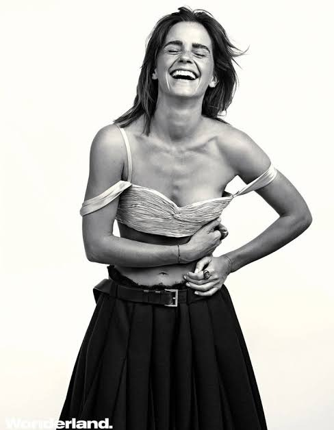
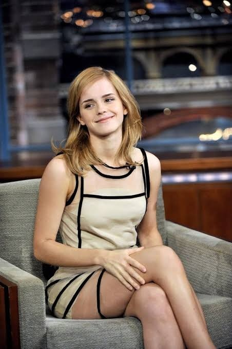
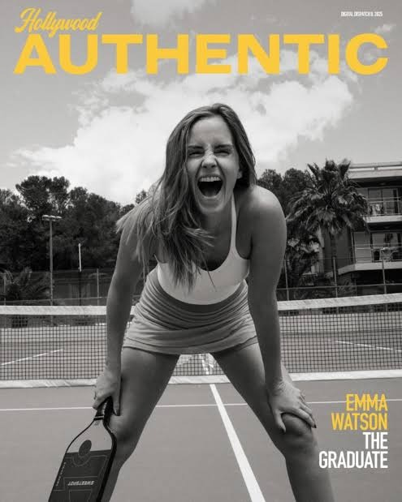

Panel I · 1990
Born in Paris
Emma Watson was born in Paris on 15 April 1990 and grew up in Oxfordshire, England.
In the glass: a star.
An unofficial fan tribute
Medieval windows are read from the bottom up. Scroll to light this one, panel by panel.
Light the windowThe window · read from the bottom up
Panel I · 1990
Emma Watson was born in Paris on 15 April 1990 and grew up in Oxfordshire, England.
In the glass: a star.
Panel II · 2001–2011
Cast at nine as Hermione Granger, she played her across all eight Harry Potter films.
In the glass: a film reel.
Panel III · 2014
She graduated from Brown University with a degree in English literature.
In the glass: a mortarboard.
Panel IV · 2014
Appointed a UN Women Goodwill Ambassador, she launched HeForShe at UN headquarters in New York on 20 September 2014.
In the glass: two circles, in the suffragette colours.
Panel V · 2016
She started the feminist book club Our Shared Shelf, and hid copies of Maya Angelou's Mom & Me & Mom on the London Underground.
In the glass: an open book.
Panel VI · 2017–2019
She played Belle in Beauty and the Beast (2017) and Meg March in Little Women (2019).
In the glass: a rose.
The rose window
Thirteen roles, thirteen petals. Point at a film to light its petal.
Portraits
Each portrait is set in its own lancet, and the colour of the glass clears as it comes into view.





From her HeForShe speech
Both men and women should feel free to be sensitive. Both men and women should feel free to be strong.
Gender equality is your issue too.
If not me, who? If not now, when?
Emma Watson · United Nations, New York · 20 September 2014
Votive candles
Leave a few words and a candle will burn for them here. Everyone who can open this page sees the candles.
Unofficial fan site. Not affiliated with Emma Watson or her representatives, UN Women or HeForShe. Made by Veer Singh.
The window, the stone and the light are drawn live in your browser. Photographs belong to their photographers and publishers, including Wonderland and Hollywood Authentic. Quotes are from her HeForShe speech at the United Nations on 20 September 2014.